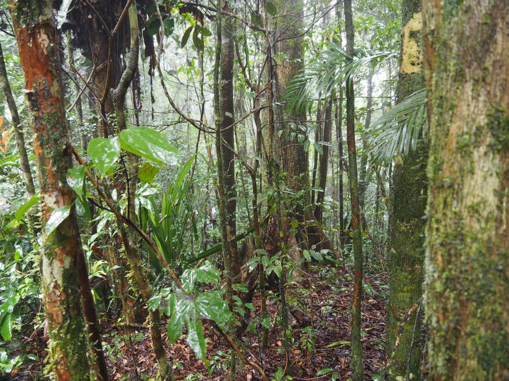
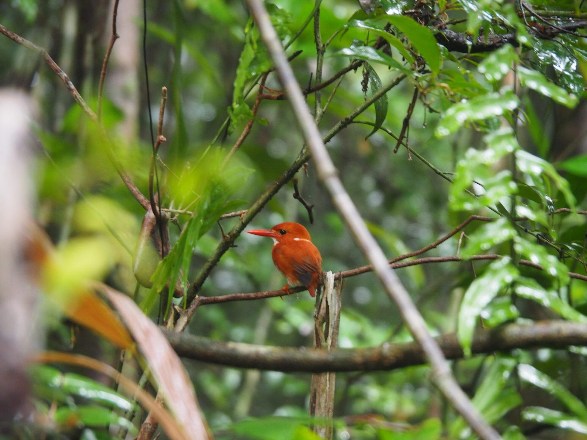
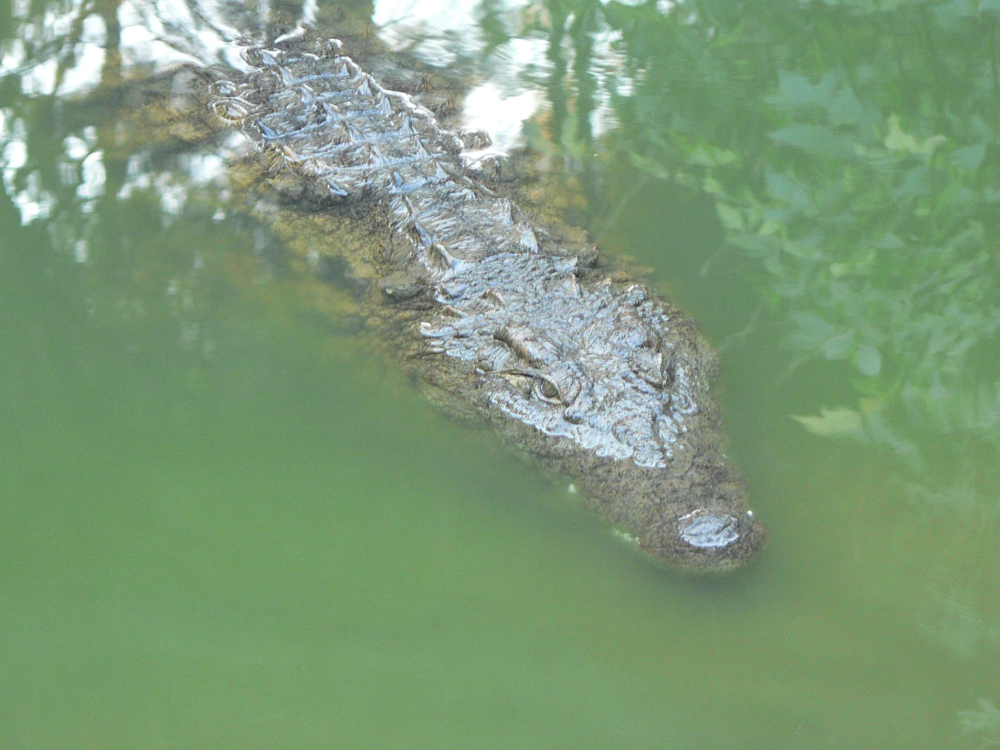
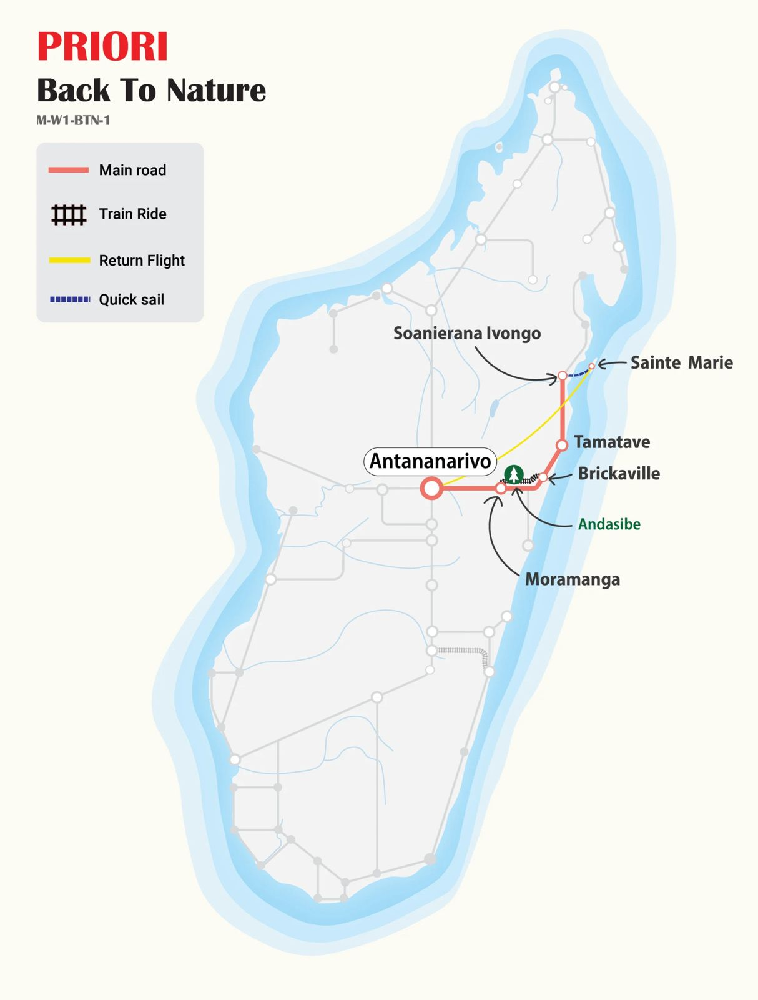

MG110 · Nature & Beach Circuit
Get Back to Nature!
A steam train through the tropical forest, lemurs in the wild, and the sun-drenched shores of Île Sainte-Marie, Madagascar at its most alive.

On one of the oldest railway lines still in service in Madagascar, you will experience a train journey the Malagasy way: vendors rushing the platforms at every stop, bananas held out with a big smile, the forest closing in on either side. From the highland capital to the lemur-filled rainforests of Andasibe, then east to the spice port of Tamatave and finally out to the palm-fringed paradise of Sainte-Marie, this is Madagascar in full colour.
At a Glance
The Essentials
Itinerary Antananarivo → Moramanga → Brickaville → Andasibe → Tamatave → Soanierana Ivongo → Île Sainte-Marie → Antananarivo
Nature, culture and beach, three very different moods woven into a single journey down Madagascar's green eastern flank.

Not to Miss
Circuit Highlights
- The railway journey. Tamtam, ratatatam, the passenger train sets off through the tropical forest. At every stop, villagers crowd the platform with fruit and freshly cooked food. Have change in your pocket: those ranjaly bananas are not to be missed.
- Andasibe & Mantadia National Park. Nearly 16,000 hectares of dense tropical rainforest, home to chameleons, day geckos, tiny frogs, and the magnificent Indri, the largest living lemur, whose powerful call carries for miles through the canopy.
- Tamatave spice market. Madagascar's largest port is the gateway for vanilla, cloves, cinnamon and pepper heading to the world. Follow the aromas through the market stalls, it smells extraordinarily good.
- Île Sainte-Marie. Nearly deserted white-sand beaches, swaying palms, warm Indian Ocean waters protected by a coral reef, and a pirate cemetery where members of the legendary free republic of Libertalia lie buried.


Day by Day
Full Itinerary
- Day 1 Flight from Switzerland Tonga Soa! Upon arrival at Antananarivo airport, a driver greets you and transfers you to the hotel.
- Day 2 Antananarivo → Moramanga Leaving the highland capital behind, we head east toward the port of Tamatave. The road winds elegantly through hills and rice fields, the landscape growing greener and more lush with every kilometre. We arrive in Moramanga, "where mangoes are cheap."
- Day 3 Moramanga → Train Journey → Brickaville → Andasibe Tamtam, ratatatam, the passenger train sets off through the forest. At every stop, villagers rush the platform with fruit and cooked food held out at arm's length. Make sure you have small change in your pocket, or you might miss those beautiful freshly picked ranjaly bananas, offered with a broad smile by a small boy. Brickaville is our terminus; our driver then takes us back to Andasibe for the visit to Mantadia National Park.
- Day 4 Andasibe, Mantadia National Park Surrounded by every shade of green, a dirt track leads to the park entrance. With the help of our guide, we observe several species of lemurs in their natural habitat across nearly 16,000 hectares of dense tropical rainforest. The park is also home to many birds, chameleons, day geckos and tiny frogs, and, on the small islands near Vakona Lodge, crocodiles and other endemic lemurs.
- Day 5 Andasibe, Analamazaotra Reserve & Night Walk Our hike through the Analamazaotra reserve brings us face to face with the famous Indri, the largest living lemur, whose powerful call resonates through the forest. We also discover many tropical plants in the Orchid Park. In the evening, a night walk awaits, and there, in a tree hollow, eyes gleam in the beam of our torches: a tiny mouse lemur, surely the most endearing of all nocturnal animals.
- Day 6 Andasibe → Tamatave Departure toward Tamatave, Madagascar's largest port. Many of the island's most precious goods pass through here, vanilla, cloves, cinnamon, pepper, awaiting shipment worldwide. We follow the exotic aromas on a walk through the city's spice market. Mmmh, it smells so good.
- Day 7 Tamatave → Soanierana Ivongo → Île Sainte-Marie Almost Malagasy style: by minibus, we travel north along the coast. Along the way, the rhythms of daily village life unfold, cooking here, fieldwork there, children herding livestock, chickens crossing the road at any moment. At Soanierana Ivongo (not easy to pronounce!), a boat carries us offshore to Sainte-Marie island.
- Day 8 Île Sainte-Marie, Welcome to Paradise Nearly deserted white-sand beaches, gently swaying palm trees and the warm waters of the Indian Ocean, protected by a coral reef. A kingdom of fish in all colours and shapes, fishermen know it well. Watch them cast their nets in a graceful, ancestral gesture, repeated thousands of times.
- Day 9 Île Sainte-Marie, Market & Pirate Cemetery Let's immerse ourselves in the colourful atmosphere of the main town's market, woven sobika baskets, handmade brooms and even solar panels, all surrounded by the enchanting smell of cloves drying on mats on the ground. Adventurers should visit the pirate cemetery, where some of the most feared members of the legendary free republic of Libertalia are buried.
- Day 10 Île Sainte-Marie, Free Day Tired of nature and discovery? Then say yes to a sun lounger, admire the sea and let yourself be carried away by the last rays of sun setting over Madagascar. The day is entirely yours.
- Day 11 Île Sainte-Marie → Antananarivo Ah, the zebus clear the runway, a sign that the plane bringing us back to Antananarivo is landing. A short flight returns us to the highland capital.
- Day 12 Antananarivo, City Discovery Today Madagascar's capital reveals its charms. A stroll through narrow streets and old neighbourhoods, including a visit to one of the 12 sacred hills, offers a breathtaking panorama over the city spread below.
- Day 13 Antananarivo, Last Day & Departure Our last full day in Madagascar, time for last-minute shopping at the craft market, a final wander, or simply relaxing at the hotel. In the evening, we head to the airport for our departure flight.
- Day 14 Return Flight The plane lifts off, carrying us home. Veloma Madagasikara , farewell, Madagascar.

PRIORI M-W1-BTN-1